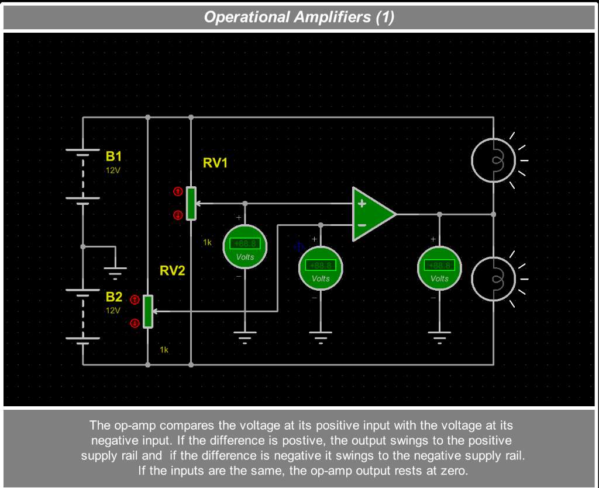
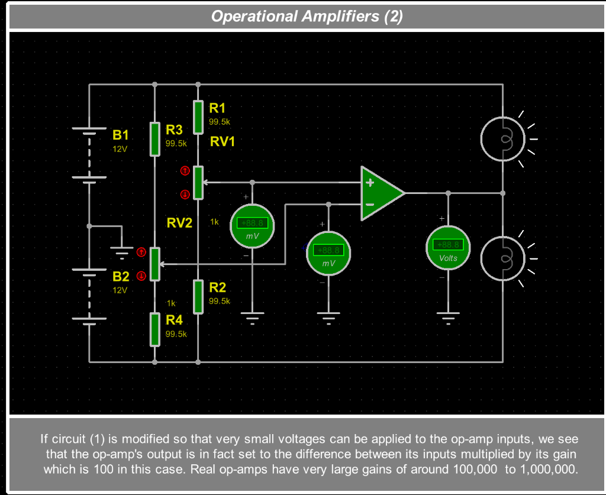
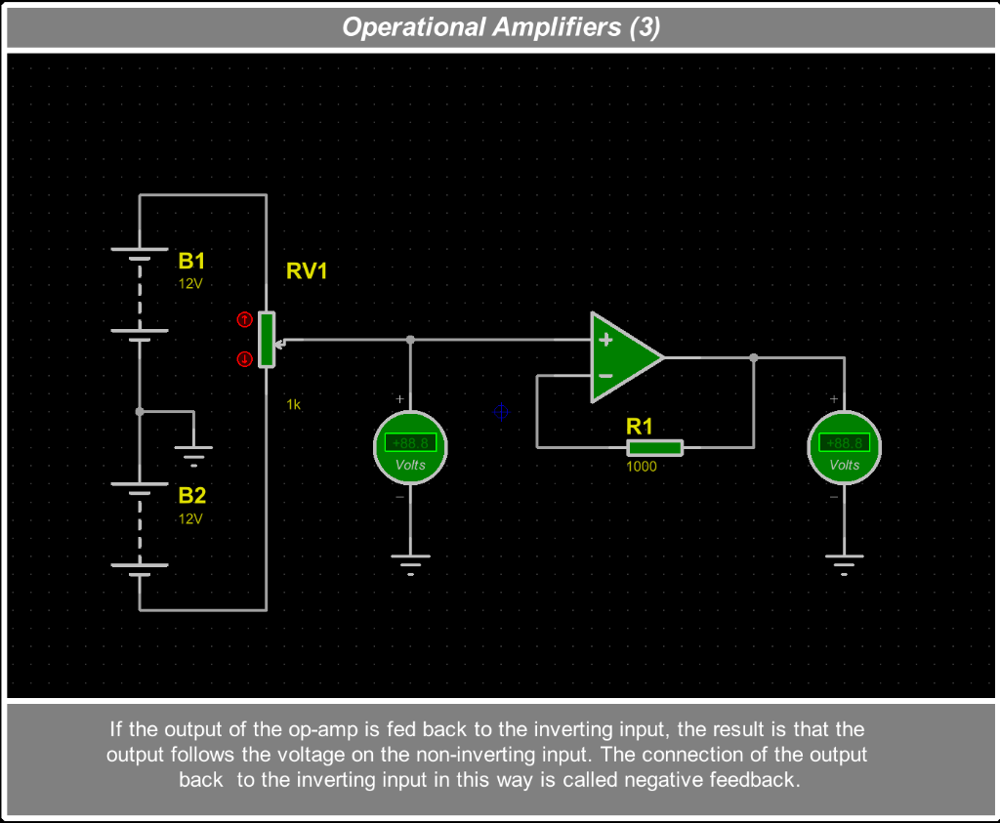
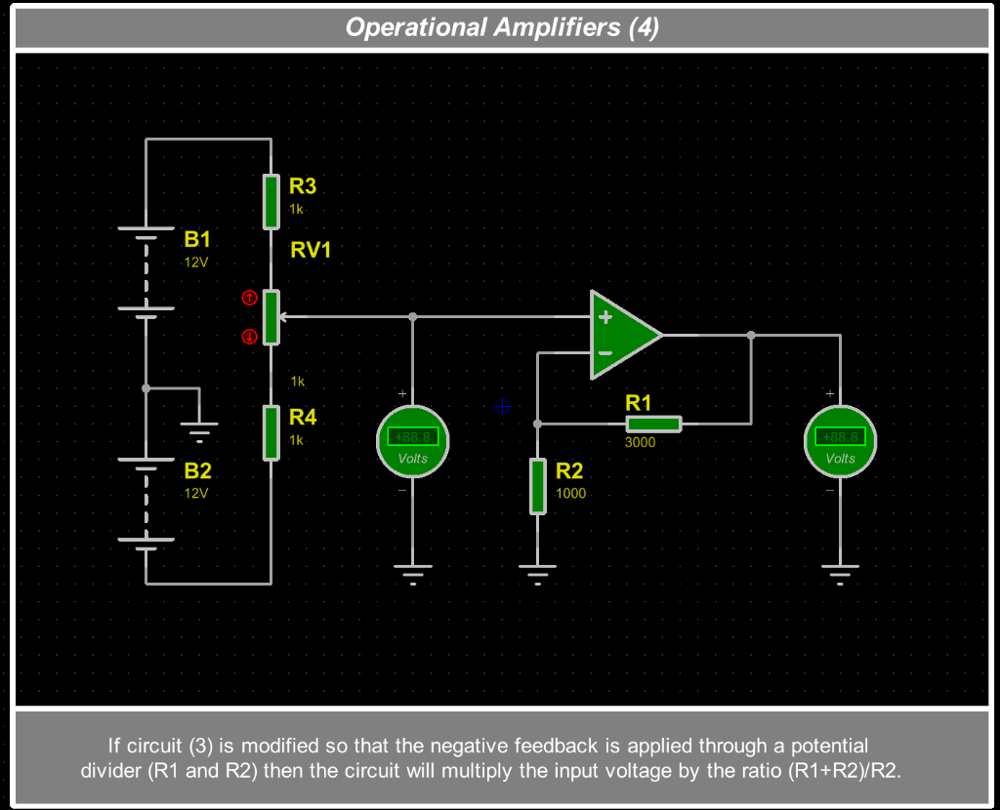
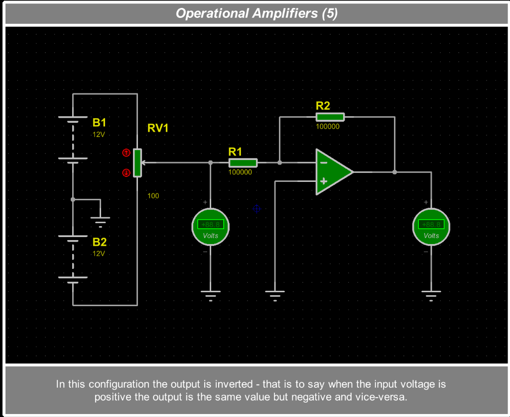
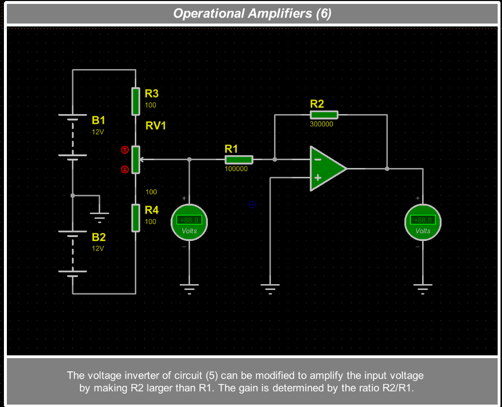

Ce TP d'introduction d'1h30 vous prépare à la prise en main des amplificateurs opérationnels (ALI). Toutes vos réponses aux études (Q1.1 à Q3.1), vos tableaux comparatifs (T1 et T2) et vos 3 captures d'écran (C1 à C3) sont à compléter dans le document Google Docs associé au devoir dans Google Classroom.
− (suiveur, amplificateur non-inverseur, inverseur), et relier chaque structure à un usage concret dans la vraie vie.+V / 0 V / −V), le rôle des résistances talons autour d'un potentiomètre, et observer la règle pratique des entrées IN+ et IN− (dont la masse virtuelle à 0 V).+5 V / −5 V avec le Digilent Analog Discovery 3, et mener une campagne de mesures sur un amplificateur inverseur à gain réglable par potentiomètre.Dans Proteus 8, six circuits interactifs permettent de découvrir pas à pas tous les montages classiques à amplificateur opérationnel (ALI). Vous pouvez les ouvrir directement via File → Open Sample Project → Interactive Simulation → Animated Circuits → OpAmps (ou les câbler rapidement sous ISIS) et agir en direct sur les flèches rouges ↑ / ↓ des potentiomètres pendant la simulation !

+ avec celle sur son entrée −. Si la différence (V+ − V−) est positive, la sortie bascule au rail d'alimentation positif (+12 V) ; si elle est négative, elle bascule au rail négatif (−12 V). »
RV2 règle le seuil de consigne sur IN− et la sonde (température ou luminosité) arrive sur IN+. Dès que la mesure franchit la consigne, la sortie bascule en « Tout-ou-Rien » au maximum pour enclencher le relais ou allumer le voyant d'alerte !

0,1 mV d'écart ! Il est donc inutilisable seul pour amplifier de l'audio ou un capteur sans le stabiliser avec les résistances de retour des montages (3) à (6).
B1 (12V) et B2 (12V) sont raccordées au symbole de masse (0 V) situé entre elles, indiquez les potentiels exacts P1 (fil du haut), P2 (point central de référence) et P3 (fil du bas).RV2 à +2,0 V sur IN− et faites passer RV1 (IN+) de +1,9 V à +2,1 V. Quelles sont les deux seules tensions possibles en sortie ? Lorsque la sortie vaut +12 V, expliquez grâce aux potentiels P1 et P3 pourquoi la lampe du haut reste éteinte alors que la lampe du bas s'allume fort !RV1 sur le Montage (2) (Figure 1 — bloc 2) : Pourquoi a-t-on ajouté deux grandes résistances R1 = R2 = 99,5 kΩ de part et d'autre de RV1 (1 kΩ) ? Relevez sous Proteus (en mettant le curseur de RV1 tout en haut puis tout en bas) les potentiels P4 et P5 en millivolts (mV), et expliquez pourquoi un véritable ALI (gain interne ×100 000) ne peut pas amplifier un signal musical en boucle ouverte sans l'écraser complètement.
−), la tension de sortie recopie exactement la tension présente sur l'entrée non-inverseuse (+). Ce rebouclage vers l'entrée − s'appelle la contre-réaction négative. »

− passe par un pont diviseur de tension (R1 = 3000 Ω et R2 = 1000 Ω), le circuit multiplie la tension d'entrée par le rapport (R1 + R2) / R2 (ici ×4). »
LM35 ne délivre que 10 mV/°C (soit 0,25 V à 25 °C). En le multipliant par +4 ou +10 sans inverser son signe positif, on utilise toute l'échelle 0 – 3,3 V du convertisseur analogique-numérique (ADC) pour gagner en précision !
RV1 pour avoir +5,0 V sur l'entrée IN+. Quelle tension lisez-vous en sortie ? Placez une sonde de tension Proteus [V] sur la patte IN− (à gauche de R1 = 1000 Ω) : quel potentiel P6 mesurez-vous ? Que constatez-vous entre les potentiels des deux entrées V+ et V− grâce à la contre-réaction ?R3 = 1 kΩ, RV1 = 1 kΩ et R4 = 1 kΩ branchés entre +12 V et −12 V, quels sont les potentiels P4 (haut de RV1) et P5 (bas de RV1) ? Pourquoi le concepteur a-t-il limité l'entrée entre ces deux valeurs alors que le montage multiplie par 4 ?IN+ à +2,0 V : relevez la tension de sortie, puis placez une sonde au nœud entre R1 (3000 Ω) et R2 (1000 Ω) (broche IN−). Retrouvez-vous toujours l'égalité V− = V+ ?Regardez bien le triangle vert des schémas (5) et (6) : le dessinateur l'a retourné verticalement ! L'entrée − est en haut et l'entrée + est en bas, directement reliée à la masse 0 V (GND). Toujours lire les signes + et − inscrits dans le symbole avant de câbler !

+V) ; un montage inverseur crée instantanément l'onde exactement opposée (−V, déphasée de 180°) envoyée dans l'écouteur pour annuler le bruit par opposition !

R2 plus grande que R1 (ici 300 kΩ / 100 kΩ). Le coefficient d'amplification est fixé par −R2 / R1. »
R1 et R2 fixent une amplification constante (−R2 / R1, ici ×(−3)) pour remettre à niveau un capteur ou une source ligne faible, et le point à 0 V sur IN− permet dans une console audio d'additionner plusieurs entrées sur le même ALI sans qu'elles ne se perturbent (ici, RV1 à gauche sert uniquement à simuler une tension d'entrée variable en test).
[V] ajoutée sur la broche IN− mettant en évidence l'égalité des potentiels V− = V+.
IN− dans les Montages (5) et (6) : À quel potentiel fixe est raccordée l'entrée IN+ ? Réglez l'entrée à +2,0 V sur le Montage (6), relevez la tension de sortie, puis posez une sonde de tension Proteus [V] sur le fil reliant R1, R2 et la patte IN− : quel potentiel P6 lisez-vous ? Expliquez en une phrase pourquoi on appelle ce nœud une « masse virtuelle » (bien qu'il ne soit pas relié par un fil à la masse !).| Montage Proteus | Retour Sortie → IN− ? (Oui / Non) | Broche recevant l'entrée | Relation Sortie / Entrée (Gain mesuré) | Signe de la Sortie vs Entrée | Application concrète dans la vraie vie |
|---|---|---|---|---|---|
| (1) Comparateur | ............ | IN+ et IN− |
Bascule à .......... ou .......... | Selon signe (V+ − V−) | .................................................. |
| (2) Boucle ouverte (mV) | ............ | IN+ et IN− |
×100 (réel : ×100 000 !) | Selon signe (V+ − V−) | .................................................. |
| (3) Suiveur | ............ | ...... |
Gain = ............ | ......................... | .................................................. |
| (4) Ampli Non-Inverseur | ............ | ...... |
Gain = ............ | ......................... | .................................................. |
| (5) Inverseur unitaire | ............ | ...... |
Gain = ............ | ......................... | .................................................. |
| (6) Ampli Inverseur | ............ | ...... |
Gain = ............ | ......................... | .................................................. |
Observez à nouveau les six schémas Proteus de la Partie 1 : le triangle vert de l'amplificateur opérationnel n'affiche que 3 connexions (+, − et Sortie), et aucun fil ne relie les piles B1/B2 au triangle ! Pourtant, comment la sortie pourrait-elle fournir +8 V ou −12 V sans source d'énergie ?
Sur les schémas théoriques et dans certains modèles Proteus, les deux pattes d'alimentation (V+ et V−) sont sous-entendues (cachées) pour ne pas surcharger le dessin. En réalité, un ALI est un circuit électronique actif rempli de transistors : si vous oubliez de câbler ses broches d'alimentation sur la breadboard, le composant est totalement inerte !
| Référence TI myParts Kit | Boîtier & Technologie | Broches d'Alimentation Réelles | Broches de l'ALI utilisé |
|---|---|---|---|
LM741CN ou LF356N(recommandé pour ce TP) |
DIP-8 — 1 seul ALI intégré ( LM741 = Bipolaire, LF356 = JFET) |
Broche 7 = V+ (+5 V)Broche 4 = V− (−5 V) |
IN− = Broche 2 | IN+ = Broche 3OUT = Broche 6 (1, 5, 8 non reliées) |
TL072CP(variante double ALI) |
DIP-8 — 2 ALI JFET dans le même boîtier | Broche 8 = VCC+ (+5 V) ⚠️Broche 4 = VCC− (−5 V) |
ALI n°1 : 1IN− = 2 | 1IN+ = 3 | 1OUT = 1 ⚠️ |
TL074CN |
DIP-14 — 4 ALI JFET intégrés | Broche 4 = VCC+ | Broche 11 = VCC− |
4 opérateurs indépendants (quadruple ALI) |
Potentiomètre 104 (100 kΩ)(ou 103 = 10 kΩ) |
Trimmer rectangulaire 3 pattes à vis de réglage | Composant passif (aucune alimentation) | Patte centrale [2] = Curseur mobile ; pattes extrêmes [1] et [3] = piste totale |
LM741CN, un LF356N ou un TL072CP de la mallette TI (repérez bien l'encoche du boîtier DIP-8 !) ;R1 = 10 kΩ (Marron-Noir-Orange-Or) à l'entrée et remplacez la résistance fixe R2 par le potentiomètre ajustable RV = 100 kΩ (marquage 104, branché entre sa patte centrale [2] et une patte d'extrémité [1], réglé vers sa mi-course) — astuce : si vous prenez le potentiomètre 103 (10 kΩ), prenez R1 = 1 kΩ ;IN+ à la masse 0 V (GND), le générateur W1 (fil Jaune AD3) à l'entrée de R1, et câblez les broches d'alimentation (+5 V fil Rouge V+, −5 V fil Blanc V−, 0 V fil Noir ↓ ainsi que les masses 1− et 2− du Scope).Wavegen 1 (W1), configurez un signal Sine de fréquence 1 kHz, d'amplitude crête 500 mV (soit 1,0 Vpp crête-à-crête) et d'offset 0 V → cliquez sur Run.Scope (1+ Orange sur l'entrée, 2+ Bleu sur la sortie) et cliquez sur Run en laissant volontairement l'outil Supplies sur OFF : observez la trace bleue de sortie !Supplies : réglez Positive Supply (V+ Rouge) sur +5 V et Negative Supply (V− Blanc) sur −5 V, puis cliquez sur Master Enable (ON) : observez le changement immédiat sur l'oscilloscope !LM741CN puis sur un TL072CP.Scope lorsque l'outil Supplies de l'AD3 était sur OFF, puis dès son passage sur ON (+5 V / −5 V) ? Quels fils de couleur de la nappe AD3 amènent le +5 V, le −5 V et le 0 V ?Votre amplificateur inverseur réel (alimenté en +5 V / −5 V, entrée sinusoïdale 1,0 Vpp à 1 kHz) reproduit à lui seul les Montages Proteus (5) et (6), tout en permettant de faire varier le gain en continu à l'aide d'un petit tournevis sur le potentiomètre RV :
10 kΩ et RV réglable de 0 kΩ à 100 kΩ
Scope, affichez les mesures automatiques crête-à-crête : menu View → Measurements → Add → Defined Measurement → Channel 1 → Peak2Peak, puis faites de même pour Channel 2 (Peak2Peak).RV pour réaliser les 5 points de fonctionnement du Tableau T2 ci-dessous (vous pouvez soit prérégler RV à l'ohmmètre hors circuit en coupant Supplies, soit ajuster directement la vis pour atteindre les valeurs cibles de RV / gain) :
RV ≈ 0 kΩ) : tournevis en butée sens anti-horaire (ou horaire selon le sens d'implantation) donnant une sortie nulle ;RV = 10 kΩ) : sortie d'amplitude égale à l'entrée (1,0 Vpp) mais inversée ;RV = 30 kΩ) : sortie multipliée par 3 et inversée ;RV = 50 kΩ) : forte amplification sans déformation ;RV = 100 kΩ) : observez attentivement la forme du sommet et du bas de la courbe bleue !2+ du Scope pour venir toucher la broche 2 (IN−) de votre ALI sur la breadboard : mesurez l'amplitude présente sur IN− !2+ sur la broche 2 (IN−), tournez RV jusqu'en butée maximale (Point 5, saturé) : que se passe-t-il sur le potentiel de IN− dès que la sortie sature ?C1 (`1,0 Vpp`) et courbe de sortie C2 (`~3,0 Vpp`) montrant clairement l'amplification ×3 ET l'opposition de phase (quand `C1` monte au maximum, `C2` descend au minimum !), avec l'encadré Measurements Peak2Peak visible.| Réglage du Potentiomètre RV | Gain Théorique (−RV / R1) | Amplitude Entrée VE,pp (C1) | Amplitude Sortie VS,pp mesurée (C2) | Gain Réel Mesuré (VS,pp / VE,pp) | Forme du Signal & Phase (En phase / Opposé 180° / Écrêté) |
|---|---|---|---|---|---|
| 1. Butée min (RV ≈ 0 kΩ) | 0 | 1,0 Vpp | .............. Vpp | .............. | ........................................ |
| 2. RV = 10 kΩ (= Montage 5) | −1 | 1,0 Vpp | .............. Vpp | .............. | ........................................ |
| 3. RV = 30 kΩ (= Montage 6) | −3 | 1,0 Vpp | .............. Vpp | .............. | ........................................ |
| 4. Mi-course (RV = 50 kΩ) | −5 | 1,0 Vpp | .............. Vpp | .............. | ........................................ |
| 5. Butée max (RV = 100 kΩ) | −10 (10 Vpp th.) | 1,0 Vpp | .............. Vpp | .............. | ........................................ |
Questions d'Analyse Pratique Q3.1 :
Scope que le montage réalise bien un gain négatif (inverseur) ?RV = 100 kΩ (gain théorique −10) et une entrée de 1,0 Vpp (±0,5 V crête), la sortie aurait dû atteindre 10 Vpp (±5,0 V crête). À quelles tensions haute et basse votre signal réel s'est-il écrêté, et pourquoi ne dépasse-t-il pas l'alimentation fournie par l'AD3 ?IN−) : Quelle tension avez-vous mesurée au Scope sur la broche 2 lorsque le montage fonctionnait sans saturer (Point 3), puis qu'est-il apparu sur cette même broche 2 en butée saturée (Point 5) ?| Compétence STI | Critères d'Évaluation (Séance 1h30 + Document Google Docs) | Barème |
|---|---|---|
| C04 — Analyser | Placement juste des potentiels (+12 V / 0 V / −12 V, résistances talons, égalité V− = V+ et masse virtuelle 0 V) et comparaison pertinente des 6 montages avec leurs applications réelles (Tableau T1). |
/ 7 pts |
| C07 — Réaliser | Repérage sans erreur du brochage DIP-8 et des broches d'alimentation cachées (Q2.1), câblage propre et sécurisé sur breadboard (Supplies OFF pendant les modifications, masses communes reliées). |
/ 5 pts |
| C06 — Valider | Rigueur de la campagne de mesures avec variation du gain par potentiomètre au Digilent AD3 (Tableau T2, vérification de l'inversion de phase, de la masse virtuelle et de l'écrêtage en Q3.1). |
/ 5 pts |
| C01 — Communiquer | Clarté du rapport Google Docs remis sur Classroom, présence et légendage soigné des 3 captures (C1, C2, C3) et respect des unités (V, mV, Vpp, kΩ). |
/ 3 pts |